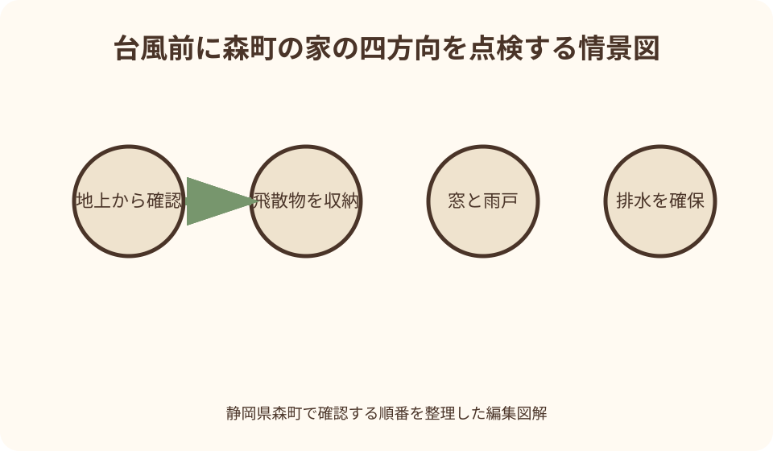
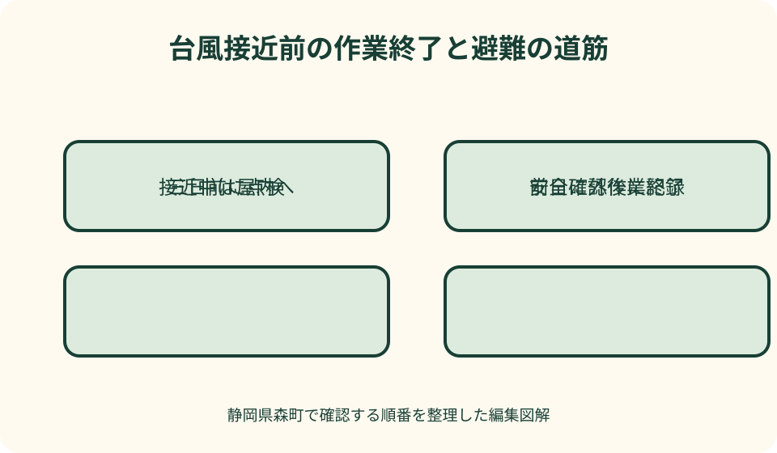

防災・家族の備え｜最終確認 2026-08-10
静岡県森町で台風前に家を点検｜飛散物・窓・停電・避難の順番
台風前の家点検で大切なのは、確認項目の多さより作業を終える時刻です。屋外作業は雨や風が強くなる前に終え、飛散物、窓、排水、停電・断水、家財、避難の順に家族で担当を決めます。接近後に屋根や側溝を見に出ないことも、点検計画の一部です。

編集イラスト結論：点検項目より先に屋外作業の終了時刻を決める
台風が近づいたら、まず気象庁の台風情報と森町の防災情報を確認し、雨と風が強くなる見込み時刻を家族で共有します。その時刻より十分前に屋外作業を終える締切を決め、間に合わない作業は中止します。
点検は、飛ぶ物を減らす、窓から離れる、雨水を通す、電気と水が止まっても過ごす、危険なら早く避難する、の五つへ分けます。全部を一人で行わず、屋外、室内、情報確認を家族で担当します。
屋根瓦、アンテナ、高い枝、外壁上部の異常は地上から写真を撮り、専門家へ渡します。接近直前に屋根へ上る、はしごを掛ける、強風の中でロープを結ぶ行動は、飛散物を防ぐより大きな危険を生みます。
自宅を整えても、河川、土砂、倒木、道路冠水の危険があれば留まれません。森町防災ハザードマップ、町の避難情報、家族の移動能力を合わせ、家の点検と避難判断を同時に進めます。
森町と気象庁の一次情報から確認する台風前の基本
森町公式の自然災害案内は、台風接近前に家の周囲を見回り、飛ばされやすい小物を屋内へ入れ、アンテナ、看板、板塀に注意し、雨どいを掃除するよう案内しています。停電用の照明、予備電池、携帯ラジオ、飲料水も挙げています。
同ページは、浸水が心配な地域では土のうを用意し、低地の住宅では食料、家財、衣類など生活必需品を移す準備を求めています。台風後にも家屋周辺を点検しますが、安全情報を確認してから行います。
森町防災ガイドブックは、台風が接近する前に最新の台風・警報・雨雲情報を確認し、飛びそうな物を収納または固定し、窓や雨戸を補強し、床上浸水へ備えるよう整理しています。接近中はなるべく外へ出ないことも明記しています。
気象庁も、家の外の備えは大雨と強風の前に行い、窓と雨戸の施錠、側溝・排水口の清掃、飛散物の固定・格納を勧めています。室内では飛散防止フィルム、カーテンやブラインド、非常用品、水の確保を挙げています。
森町は荒天時のごみについて、収集が遅れたり翌日以降になったりする場合があり、無理なごみ出しを控えるよう案内しています。片付けた物を台風直前に集積所へ移さず、自宅で飛散しないよう保管します。
三日前・前日・接近中で作業を分ける
三日前を目安に、家の外周写真、飛散物一覧、雨どい、窓、停電用品、避難経路を確認します。予報の進路と速度は変わるため「まだ遠い」と先送りせず、日程を前倒しできる作業から始めます。
前日は、屋外作業を終え、車や家財の移動、充電、飲料水、薬、持出袋を整えます。家族の帰宅を待ってから全員で始めるのではなく、日中に安全に動ける人が担当します。
接近中は、窓や扉から離れ、町・気象庁の情報を確認し、屋外へ出ません。雨戸が音を立てる、物が飛んだ、雨どいがあふれた場合も、その場で直しに行かず、安全な室内位置へ移ります。
台風通過後も、吹き返しの風、増水、土砂災害が続く場合があります。空が明るくなっただけで外へ出ず、警報、避難情報、道路情報を確認してから点検を再開します。

庭・ベランダ・玄関の飛散物を室内へ移す
植木鉢、物干しざお、じょうろ、掃除道具、子どもの遊具、自転車かごの物、園芸支柱など、小さく軽い物から屋内または物置へ入れます。飛んだ物は自宅の窓だけでなく、近隣や道路へ被害を及ぼします。
ごみ箱や収納ボックスは中身が重くても、ふたや外箱だけが飛ぶ場合があります。屋内へ入れられない物は、製品が認める固定点と十分な強度のある場所を使います。雨どいや手すりへ安易に結びません。
物干し台、ベンチ、脚立、看板は重いから動かないと決めつけず、風を受ける面積と転倒方向を見ます。自分で持てない物を台風直前に動かさず、平常時に専門家と固定・撤去を決めます。
屋内へ移した物は玄関、廊下、避難口をふさがない場所へ置きます。濡れた園芸用品と食料や寝具を分け、薬品、燃料、刃物は子どもが触れない位置へ保管します。
屋根・アンテナ・板塀は地上から確認し、登らない
屋根瓦のずれ、棟板金、アンテナ、太陽光パネル、雨どい金具は、地上の安全な位置から望遠で撮影します。異常が疑われても自分で屋根へ上がらず、台風期前に屋根や電気の専門業者へ点検を依頼します。
板塀、フェンス、門扉、カーポートは、がたつき、さび、基礎のひび、留め具の外れを地上で確認します。応急的にロープで道路側へ引くなど、別の事故を招く固定は避けます。
庭木の高い枝、電線へ近い枝、枯木は自分で伐採せず、樹木管理や電線の担当へ相談します。電線へ枝が接触している場合は近づかず、電力会社へ場所と状態を伝えます。
突然訪問した業者から屋根の破損を指摘されても、その場で点検や契約を決めません。森町広報も、台風不安をあおる屋根点検トラブルへ注意し、複数見積りと消費生活相談の利用を案内しています。
窓・雨戸・シャッターは閉まるかを晴天時に試す
雨戸やシャッターは、レールのごみ、鍵、戸袋、手動切替を晴天時に確認します。長く使っていない物を強風直前に無理に動かすと外れや故障につながるため、動きが悪ければ早めに修理を依頼します。
窓の鍵を閉め、網戸に外れやがたつきがないかを確認します。取り外す必要があるかは製品と住宅の構造で異なるため、施工者へ尋ねます。高所の外窓へ身を乗り出して作業しません。
飛散防止フィルムは、ガラスの種類に適合する製品を説明どおり施工します。テープだけで窓全体の破損を防げると考えず、雨戸・シャッター、カーテン、窓から離れる行動を組み合わせます。
接近中はカーテンやブラインドを閉め、窓際から離れます。ベッド、子どもの遊び場、ペットケージを窓から移し、飛来物が入っても家族が直接当たらない室内位置を決めます。
雨どい・側溝・排水口は晴天時だけ清掃する
雨どいの落ち葉や外れは地上から確認し、高所作業は専門家へ依頼します。縦どいの出口、宅地内の雨水ます、排水口に落ち葉や物がかぶさっていないかを見ます。
道路側溝は道路管理者が関わる施設です。重いふたを外す、深い泥をさらう、配管をつなぎ替える作業を自己判断で行わず、異常箇所を写真と位置で管理者へ伝えます。
排水口の上へ植木鉢、人工芝、ごみ箱を置かず、片付けた落ち葉を袋へ入れて飛散しない場所に保管します。荒天時のごみ収集は変わり得るため、森町の最新案内を確認します。
雨が降り始めた後に流れを確認しに外へ出ません。側溝があふれた道路では、ふたの外れや深い穴が水面下に隠れます。詰まりより人命を優先し、清掃は通過後の安全確認まで待ちます。
車・農機具・物置は移動先と燃料を確認する
車を高い場所へ移す計画は、道路冠水や避難渋滞が始まる前に行います。契約駐車場や親族宅を使う場合は事前に承諾を得て、車を守るために家族の避難を遅らせません。
物置やカーポートの扉は確実に閉め、鍵や留め具を確認します。建物自体が傾いている、基礎が浮いている場合は近づかず、専門業者へ相談します。中身を重し代わりに詰め込む方法は避けます。
農機具、脚立、資材、ブルーシート、収穫かごなどは、農地や作業場から道路・水路へ流れないよう平常時から収納場所を決めます。用水路や斜面へ近づく作業は早い段階で終えます。
ガソリン、灯油、カセットボンベ、農薬などは、製品表示と法令に合う場所へ保管します。浸水や転倒、火気を避け、居室へ一時移動して安全を損なわないよう専門先へ確認します。
停電・断水・通信途絶を一組で備える
森町公式が挙げる懐中電灯、予備電池、携帯ラジオを、寝室、廊下、玄関へ分散します。スマートフォンだけに頼らず、町の防災情報、ラジオ、同報無線など複数の受信方法を用意します。
飲料水は家族人数と日数で備え、生活用水とは分けます。給水ポンプが停電で止まる住宅や井戸利用世帯は、停電が断水につながるかを設備業者へ確認します。
冷蔵庫は停電後に何度も開けず、庫内温度と食品表示で安全を判断します。停電前に氷や保冷剤を準備し、常温で食べられる最初の一食を別箱へ置きます。
生命維持に関わる医療機器は、予備電源、連続使用時間、停電時連絡先、避難判断を医療機関や機器提供元へ確認します。一般向けの充電池を自己判断で接続しません。
家財と重要書類は低い場所から移す
低地や浸水履歴のある住宅では、床置きの薬、通帳、契約書、写真、パソコン、充電器を高い場所へ移します。持出袋へ全て入れず、避難時に背負える重さを優先します。
冷蔵庫、洗濯機、大型家具を台風直前に家族だけで持ち上げません。転倒や腰のけがにつながります。かさ上げ工事や固定は平常時に専門家へ相談します。
分電盤、コンセント、給湯器、浄化槽設備が浸水する可能性を施工者と確認します。水が入った電気機器は乾いたように見えても再通電せず、点検を受けます。
貴重品を上階へ移しても、自宅へ残る理由にはしません。避難情報や建物の安全性を優先し、家財を取りに戻る行動を家族ルールで禁止します。
避難先・経路・出発条件を点検表へ入れる
森町防災ハザードマップで、自宅の洪水、土砂災害、避難先、経路を確認します。一つの経路が川沿い、崖下、低い道路を通るなら、別経路と利用をやめる条件を決めます。
指定避難所だけでなく、安全な親族宅や知人宅も候補になります。開設状況、受入条件、移動時間を確認し、ペット、乳幼児、高齢者、医療機器がある場合の持ち物を別にします。
出発条件は「雨がひどくなったら」ではなく、町の避難情報、道路状況、日没、家族の移動時間などで決めます。高齢者や歩行に時間がかかる家族は早い段階で動きます。
避難時は持ち物を最小限にし、両手を使えるリュックを基本にします。傘で片手をふさぐより雨具を使い、夜間や冠水後の移動を避ける計画にします。
接近中は窓から離れ、外の異常を直しに行かない
強風で物が飛んだ音がしても、窓を開けて確認しません。窓のない部屋や建物の中心側へ移り、ガラスから離れます。雨戸やシャッターが外れかけても、屋外で押さえません。
停電したら、ろうそくより電池式照明を使います。地震を伴う場合や家電が倒れた場合、避難に余裕があればブレーカーを切ります。復電時はガス漏れ、浸水、家電の損傷を確認します。
雨漏りが始まった場合、天井の膨らみや照明器具の近くへ立ちません。水受けを置くために危険箇所へ近づかず、電気設備への影響が疑われるときは専門先へ連絡します。
屋外のライブ映像を撮る、増水した川を見に行く、車を移すため冠水路へ出る行動は避けます。町と気象庁の情報を使い、家族へ現在地と安全を短く共有します。

通過後は安全情報と被害記録を先に確認する
台風の中心が過ぎても吹き返しがあり、上流の雨で河川水位が上がる場合があります。警報や避難情報が続いている間は外へ出ず、解除だけでなく道路と斜面の安全も確認します。
安全な範囲から、家の全景、屋根、窓、雨どい、外壁、塀、庭、浸水跡を撮影します。壊れた物を動かす前に、場所が分かる遠景と損傷の近景を残します。
垂れ下がった電線、倒木、割れたガラス、浮いた側溝ふた、斜面の亀裂へ近づきません。場所と状態を管理者や緊急先へ伝え、道路上で誘導や撤去を自分で行いません。
修理契約の前に、保険会社、町の証明窓口、支援制度へ必要な写真と手順を確認します。森町の過去の被災者支援案内でも、証明や補助に被害写真が使われています。
良い点：台風は接近前に作業順を組み立てられる
台風前点検の良い点は、予報を使って作業を前倒しできることです。飛散物、窓、排水、停電、家財、避難を時系列に並べれば、風が出てから慌てて外へ出る行動を減らせます。
家の四方を撮影すると、普段見過ごす外れ、ひび、がたつき、排水口の物を確認できます。台風後の写真と比較すれば、いつ変化したかを施工者や保険会社へ伝えやすくなります。
屋外作業の締切を共有すれば、家族が善意で雨どいを見に出る事故を防げます。終わらない作業を中止する判断も、点検の成果です。
実家の点検表を共有すると、遠方の家族が同じ質問を繰り返さず、現地の人へ負担を集中させません。誰が情報、屋外、室内、避難支援を担当するか決められます。
注文したい点：点検しても風雨の被害を完全には防げない
注文したい点は、飛散物を片付ければ台風に耐えられると考えやすいことです。周辺からの飛来物、想定を超える風、河川氾濫、土砂災害は、自宅敷地の作業だけでは防げません。
窓へのテープやフィルムは補助であり、ガラスの破損を完全に防ぐ保証ではありません。雨戸・シャッター、カーテン、室内位置、早期避難を組み合わせます。
土のうや家財移動も時間と体力が要ります。高齢者のみ、乳幼児がいる、車がない世帯は、台風接近後に近隣支援を求めるのではなく、平常時に役割と代案を決めます。
屋根の不安へ付け込む訪問販売もあります。台風前の焦りで契約せず、身分、会社、工事内容、見積りを確認し、複数社と森町消費生活相談窓口を利用します。
代案・結論：間に合わない屋外作業は中止し、室内安全へ切り替える
風が出るまでに片付かない大型物は、無理に動かさず、その周囲と飛ぶ方向から人を離します。道路や隣家への危険が差し迫る場合は、安全な屋内から消防・警察・管理者へ状況を伝えます。
雨戸が閉まらない窓は、室内側のカーテンを閉め、家族と寝具を別室へ移します。窓際の家具や家電を離し、破片が入っても避難経路をふさがない位置を選びます。
家財を上階へ運べない場合は、薬、身分証、充電器、連絡先など代替しにくい物を先にします。大型家電より人の移動を優先し、避難開始を遅らせません。
結論として、今日行うのは家の外を四方向から撮り、飛散物へ印を付け、屋外作業の終了時刻を家族へ送ることです。残った高所・重量物は専門家へ渡します。
家族に残す台風点検台帳
台帳には、家の北・東・南・西ごとに窓、雨戸、雨どい、塀、物置、樹木、飛散物、排水口を書きます。写真番号、点検日、異常、修理先を対応させます。
室内欄には、停電照明、電池、ラジオ、飲料水、薬、持出袋、家財移動先を書きます。点検済みでも使用期限や充電残量がある物は、次回確認日を入れます。
避難欄には、避難先、二つの経路、出発条件、移動に必要な時間、支援が必要な家族、ペットの用品を記します。家族が別々の場所にいる平日昼と夜間を分けます。
台風後は、被害写真、発見時刻、応急処置、連絡先、見積り、保険・町への相談を追記します。口頭だけの修理依頼や家族間の伝言を減らします。
大石の視点：外回り点検は家と土地の管理履歴になる
大石の視点では、台風前に家の外周を歩く作業は、屋根だけでなく道路、境界、排水、擁壁、農地、樹木をつなぐ現地確認です。どこから水と風を受けるかを一枚へ残します。
森町の実家を遠方から管理する場合、現地家族へ危険な屋外作業を頼み過ぎないことが大切です。高所と重量物は台風期前に専門家へ依頼し、接近時は情報と避難支援へ役割を絞ります。
空き家では、雨戸が動かない、物置が弱っている、庭木が道路へ伸びている変化に気付きにくくなります。売却を決めていなくても、定期写真と修理履歴を実家カルテへ残します。
私は、台風被害を一度も受けていないことを安全の証明とは考えません。建物、道路、境界、農地、登記名義、保険、管理担当を整理し、住む、貸す、売る、管理する全ての選択へ使える記録にします。
まとめ：外作業の締切と避難開始条件を同時に決める
静岡県森町で台風前に家を点検する順番は、気象・防災情報、飛散物、屋根の地上確認、窓・雨戸、排水、停電・断水、家財、避難です。
屋外の物は室内へ入れ、高所、重い物、電線、屋根は専門家へ渡します。窓は施錠し、雨戸・シャッターを確認し、室内ではカーテンを閉めて窓際から離れます。
作業は大雨と強風の前に終えます。接近中は雨どい、側溝、屋根、川、車を見に出ず、町と気象庁の情報を確認して安全な場所へ移ります。
まず家の四方向を撮影し、飛ぶ物を十個まで挙げ、屋外作業の終了時刻を家族へ共有してください。同じ紙へ避難開始条件も書くことで、片付けを優先して逃げ遅れる状況を防げます。
公式情報・確認先
掲載内容は次の一次情報を基礎に整理しました。営業、料金、催し、交通は変わるため、出発前または手続き前にリンク先で最新情報を確認してください。
- 自然災害（台風・集中豪雨・地震）（静岡県森町、2026-08-10確認）
- 森町防災ガイドブック 風水害編（静岡県森町、2026-08-10確認）
- 台風・大雨などの荒天時のごみの出し方について（静岡県森町、2026-08-10確認）
- 広報もりまち 令和6年10月号 屋根工事の点検トラブル（静岡県森町、2026-08-10確認）
- 自分で行う災害への備え（気象庁、2026-08-10確認）